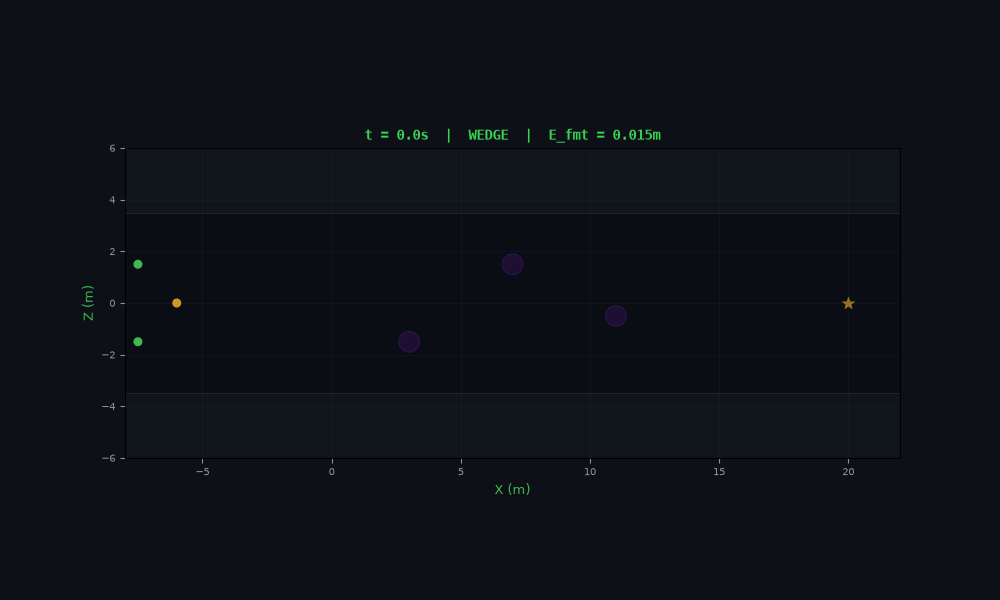
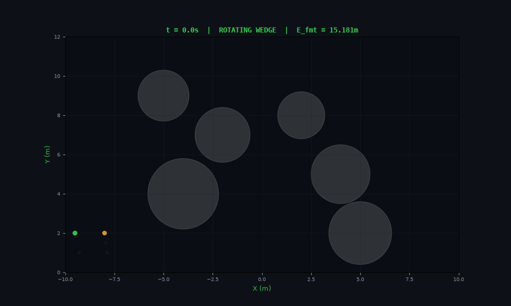

Methodology
1. Decentralized Consensus Algorithm
Each drone operates autonomously with no centralized coordinator. Communication is purely local: each agent shares its position and velocity with neighbors within \(R_{\text{comm}} = 8\) m. The consensus law drives the relative offsets between agents toward the desired formation geometry:
The desired offsets \(\mathbf{d}_i\) define the formation shape. By smoothly interpolating \(\mathbf{d}_i(t)\) between two sets of offsets mid-flight, the swarm reconfigures from wedge to diamond geometry while maintaining local connectivity.
2. Velocity-Command Guidance Architecture
Instead of commanding absolute positions, the guidance layer generates a desired velocity vector for each agent. This provides smoother transient response and natural saturation behavior:
Leader Guidance
The leader computes a unit vector toward the target waypoint and scales by cruise speed:
Follower Guidance
Each follower tracks a virtual target position relative to the leader, combined with velocity matching:
3. Obstacle Geometry and Distance Functions
Box Obstacles (Canyon Walls)
The signed distance to a box is computed by clamping the query point to the box bounds. Interior points (negative distance) receive maximum repulsive force to prevent penetration:
Cylinder Obstacles (Pillars)
Distance to a finite-height cylinder combines horizontal radial distance with vertical elevation:
4. Formation Morphing Strategy
At \(t = 8.0\) seconds (midway through the 18s simulation), the swarm transitions from a planar wedge to a 3D diamond formation. The offset vectors evolve as:
The morph duration \(T_{\text{morph}} = 2.0\) seconds gives a smooth, visually continuous transition. Formation error spikes during the transient and decays as consensus re-converges.
Wedge Formation (initial)
| Drone | Offset (x, y, z) | Role |
|---|---|---|
| D0 | (0.0, 0.0, 0.0) | Leader |
| D1 | (-1.5, 0.0, 1.5) | Left wing |
| D2 | (-1.5, 0.0, -1.5) | Right wing |
| D3 | (-3.0, 0.0, 3.0) | Far left |
| D4 | (-3.0, 0.0, 1.0) | Inner left |
| D5 | (-3.0, 0.0, -1.0) | Inner right |
| D6 | (-3.0, 0.0, -3.0) | Far right |
Diamond Formation (morphed)
| Drone | Offset (x, y, z) | Role |
|---|---|---|
| D0 | (0.0, 1.5, 0.0) | Apex (raised) |
| D1 | (-1.5, 0.5, 1.5) | Upper left |
| D2 | (-1.5, 0.5, -1.5) | Upper right |
| D3 | (-3.0, -0.5, 2.0) | Lower left |
| D4 | (-3.0, -0.5, 0.5) | Lower inner left |
| D5 | (-3.0, -0.5, -0.5) | Lower inner right |
| D6 | (-3.0, -0.5, -2.0) | Lower right |
6. Trajectory Animations
Top-Down View (X-Z Plane)
The top-down view shows the swarm flying through the canyon corridor from above. Building walls appear as dark rectangles, pillars as purple circles. The leader is amber, followers are green. Small wireframe circles show the desired formation offset targets.

Side View (X-Y Plane)
The side view shows altitude profiles. The diamond formation uses vertical separation (leader at +1.5m, lower tier at -0.5m relative to center) which is clearly visible after the morph.

7. Wind Gust Rejection Strategy
The Dryden wind model injects stochastic velocity perturbations independently on each axis. When a drone is displaced by wind, the consensus force from its neighbors pulls it back into formation. This demonstrates the key advantage of decentralized control: every drone acts as a virtual spring-damper for every neighbor, providing natural disturbance rejection without explicit fault detection.